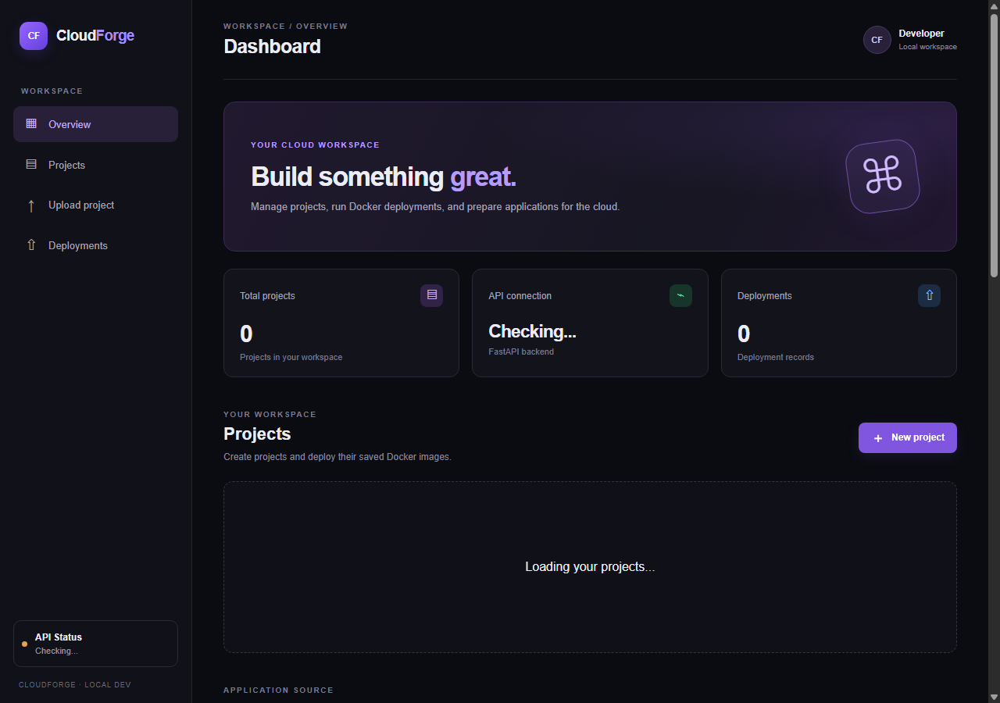
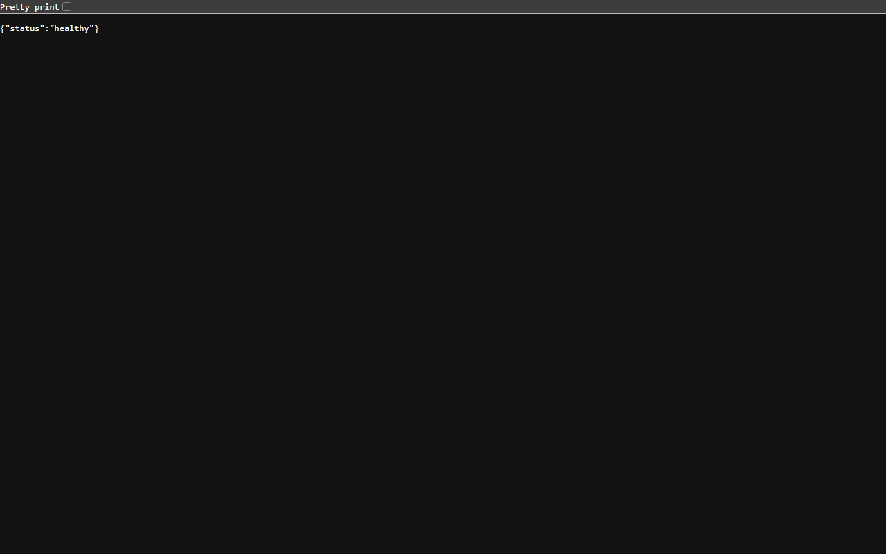

ap-southeast-2 (Sydney). The system operates as a functional prototype on an Amazon EC2 instance with reverse-proxy routing via Nginx, persistent containerized PostgreSQL data storage, and local container execution sandboxing.
| Student Name: | Eben John Jose |
| Registration Number: | 24BCE2459 |
| Programme / Branch: | B.Tech in Computer Science and Engineering (CORE) |
| Institution: | School of Computer Science and Engineering, Vellore Institute of Technology (VIT) |
| Course / Module: | Cloud Computing / DevOps Laboratory Capstone |
| Submission Date: | October 2026 |
| Live Prototype URL: | http://54.252.152.116/ |
| Public GitHub Repository: | https://github.com/Eben923/cloud-forge (Public) |
Cloud Forge: A Cloud-Native Containerized Application Build and Deployment Platform Deployed on AWS
Deploying small web applications, microservices, and student scripts typically demands manual server setup, complicated container networking, or expensive cloud PaaS layers. Developers require a secure, lightweight, and cost-controlled platform capable of ingesting source archives, compiling Docker containers safely, executing code within kernel-level resource ceilings, and logging runtime audits persistently.
Cloud Forge is deployed on AWS in region ap-southeast-2 (Sydney) utilizing an optimized multi-tier architecture:
t3.micro (2 vCPUs, 1 GiB RAM, Nitro architecture, augmented with 1 GiB swapfile) running Amazon Linux 2023.vpc-0386d45395fe28fab) with an Internet Gateway, public routing, and dedicated Security Group (sg-0e80b98f2baa7f9f4). Administrative SSH (Port 22) is locked exclusively to [REDACTED_ADMIN_IP]/32, while Port 8000 is blocked from external access.127.0.0.1:8000.systemd daemon with auto-recovery and isolated environment configuration./var/lib/cloudforge/pgdata on the EC2 host.| Layer | Technology | AWS Cloud Configuration |
|---|---|---|
| Cloud Infrastructure | AWS EC2 (Nitro) | t3.micro, Amazon Linux 2023, AMI ami-0ddbd63d0e3325a92 |
| Cloud Security & Network | AWS VPC & Security Groups | VPC vpc-0386d45395fe28fab, SG sg-0e80b98f2baa7f9f4 (SSH locked to admin IP) |
| Web & Reverse Proxy | Nginx 1.30.5 | Port 80 Ingress, Static Asset Hosting, Internal Proxy to 127.0.0.1:8000 |
| Frontend Client | React 19, Vite | Compiled SPA served via Nginx root /var/www/cloudforge |
| Backend REST API | FastAPI 0.162.0, Uvicorn | Systemd Service cloudforge.service (Port 8000 Localhost only) |
| Persistent Database | PostgreSQL 15.19 (Alpine) | Host Volume Mount /var/lib/cloudforge/pgdata, 127.0.0.1:5432 |
| Isolation Engine | Docker 25.0.14 Engine | Linux cgroups, non-root user, dropped capabilities, no network mode |
http://54.252.152.116/ on Port 80. Nginx handles static file delivery directly for the React dashboard. When an API call is made (e.g., /projects, /health), Nginx forwards the request internally to 127.0.0.1:8000. Port 8000 is inaccessible to the public internet, preventing bypass of the proxy layer./home/ec2-user/app/build_projects/. Uploaded ZIP files are checked against path traversal (Zip Slip protection).python:3.13-slim Dockerfile. The image is built using network_mode="none" to prevent unauthorized outbound connections during compilation.cap_drop=["ALL"])read_only=True)network_disabled=True)user="nobody")/var/lib/cloudforge/pgdata, records persist indefinitely across container and service restarts.The screenshots below demonstrate the live deployment running on Amazon Web Services in Sydney.


Verification output of executing Project #1 on the live AWS server:
$ curl.exe -s -X POST "http://54.252.152.116/projects/1/deployments?image_name=cloudforge-project-1:9fe0e8e4b439"
{
"id": 1,
"project_id": 1,
"status": "success",
"logs": "Starting project image: cloudforge-project-1:9fe0e8e4b439\nContainer limits: memory=128 MiB, CPU=0.5, PIDs=64, network disabled, read-only root filesystem.\n\nApplication output:\nHello from Cloud Forge!\n\nContainer exit code: 0\nApplication completed successfully."
}
Submitting an invalid image tag to the live AWS endpoint triggers validation rejection before any container is launched:
$ curl.exe -i -s -X POST "http://54.252.152.116/projects/1/deployments?image_name=cloudforge-project-1:INVALIDTAG00"
HTTP/1.1 400 Bad Request
Server: nginx/1.30.5
Date: Sat, 24 Oct 2026 12:18:28 GMT
Content-Type: application/json
Content-Length: 108
Connection: keep-alive
vary: Origin
{"detail":"Invalid image name. Build the uploaded ZIP for this project and deploy the resulting image tag."}
$ aws ec2 describe-security-groups --group-ids sg-0e80b98f2baa7f9f4 --region ap-southeast-2 Inbound Rules: - Port 80 (TCP): 0.0.0.0/0 (Public Web Ingress via Nginx) - Port 22 (TCP): [REDACTED_IP]/32 (Restricted Admin SSH Access) - Port 8000: BLOCKED (No external rule; bound to 127.0.0.1)
GitHub Repository: https://github.com/Eben923/cloud-forge
mainfe5c1b2Author: Eben John Jose
Registration Number: 24BCE2459
Programme / Branch: B.Tech in Computer Science and Engineering (CORE)
Institution: School of Computer Science and Engineering, Vellore Institute of Technology (VIT)
Course / Module: Cloud Computing / DevOps Laboratory Capstone
Submission Date: October 2026